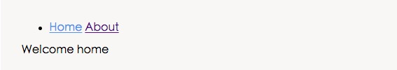

Vue.js ルーティング
この章では、Vue.js ルーティングについて説明します。
Vue.js ルーティングを使用すると、異なるURLで異なるコンテンツにアクセスできます。
Vue.js を使用すると、複数ビューのシングルページWebアプリケーション（single page web application、SPA）を実現できます。
Vue.js ルーティングでは次を読み込む必要があります：vue-router ライブラリ
中国語ドキュメントのアドレス：vue-router ドキュメント。
インストール
1、直接ダウンロード / CDN
https://unpkg.com/vue-router/dist/vue-router.js
NPM
淘宝ミラーの使用を推奨します：
cnpm install vue-router
簡単な例
Vue.js + vue-router を使用すると、シングルページアプリケーションを簡単に実装できます。
<router-link>ナビゲーションリンクを設定し、異なるHTMLコンテンツを切り替えるためのコンポーネントです。to属性は遷移先アドレス、つまり表示する内容を指します。
次の例では、vue-router を追加し、コンポーネントとルーティングのマッピングを設定して、どこでレンダリングするかを vue-router に指示します。コードは次のとおりです：
HTML コード
JavaScript コード
試してみる »
クリックしたナビゲーションリンクにはスタイルが追加されます。class ="router-link-exact-active router-link-active"。
<router-link> 関連属性
次に、<router-link> の属性についてさらに詳しく見ていきましょう。
to
ターゲットルートへのリンクを表します。クリックされると、内部で即座に to の値が router.push() に渡されます。したがって、この値は文字列または目標位置を記述するオブジェクトにすることができます。
<!-- 字符串 -->
<router-link to="home">Home</router-link>
<!-- 渲染结果 -->
<a href="home.html">Home</a>
<!-- 使用 v-bind 的 JS 表达式 -->
<router-link v-bind:to="'home'">Home</router-link>
<!-- 不写 v-bind 也可以，就像绑定别的属性一样 -->
<router-link :to="'home'">Home</router-link>
<!-- 同上 -->
<router-link :to="{ path: 'home' }">Home</router-link>
<!-- 命名的路由 -->
<router-link :to="{ name: 'user', params: { userId: 123 }}">User</router-link>
<!-- 带查询参数，下面的结果为 /register?plan=private -->
<router-link :to="{ path: 'register', query: { plan: 'private' }}">Register</router-link>
replace
replace 属性を設定すると、クリック時に router.push() ではなく router.replace() が呼び出され、ナビゲーション後に history 記録が残りません。
<router-link :to="{ path: '/abc'}" replace></router-link>
append
append 属性を設定すると、現在の（相対）パスにそのパスが追加されます。例えば、/a から相対パス b にナビゲーションする場合、append を設定していなければパスは /b ですが、設定していれば /a/b になります。
<router-link :to="{ path: 'relative/path'}" append></router-link>
tag
時には、<router-link>特定のタグとしてレンダリングしたいことがあります。例えば<li>。そこで、`tag`tagprop を使用してタグの種類を指定します。これもクリックをリッスンし、ナビゲーションをトリガーします。
<router-link to="/foo" tag="li">foo</router-link> <!-- 渲染结果 --> <li>foo</li>
active-class
リンクがアクティブなときに使用するCSSクラス名を設定します。以下のコードで置き換えることができます。
<style>
._active{
background-color : red;
}
</style>
<p>
<router-link v-bind:to = "{ path: '/route1'}" active-class = "_active">Router Link 1</router-link>
<router-link v-bind:to = "{ path: '/route2'}" tag = "span">Router Link 2</router-link>
</p>
ここでは、class`exact-active-class` を使用してactive-class="_active"。
exact-active-class
リンクが完全一致したときにアクティブになるクラスを設定します。以下のコードで置き換えることができます。
<p>
<router-link v-bind:to = "{ path: '/route1'}" exact-active-class = "_active">Router Link 1</router-link>
<router-link v-bind:to = "{ path: '/route2'}" tag = "span">Router Link 2</router-link>
</p>
event
ナビゲーションをトリガーするために使用できるイベントを宣言します。文字列、または文字列を含む配列です。
<router-link v-bind:to = "{ path: '/route1'}" event = "mouseover">Router Link 1</router-link>
上記のコードでは event が mouseover に設定されており、マウスが Router Link 1 の上に移動すると、ナビゲーションのHTMLコンテンツが変更されます。
NPM ルーティングの例
次に、npm を使用した簡単なルーティングの例を紹介します。始める前に、この例のソースコードをダウンロードしてください：
ルーティングの例Github からもダウンロードできます：https://github.com/chrisvfritz/vue-2.0-simple-routing-example
ダウンロードが完了したら、そのディレクトリを解凍し、ディレクトリ名を vue-demo に変更して、そのディレクトリに入り、次のコマンドを実行します：
# 安装依赖，使用淘宝资源命令 cnpm cnpm install # 启动应用，地址为 localhost:8080 cnpm run dev
本番環境にリリースする必要がある場合は、次のコマンドを実行できます：
cnpm run build
実行に成功したら、http://localhost:8080 にアクセスすると、次のような画面が表示されます：

その他の拡張
lunatic
138***895@qq.com
参考アドレス
exact-active-class と active-class の違い
router-link はデフォルトではルーティングが曖昧マッチ（部分一致）です。例えば、現在のパスが /article/1 の場合、<router-link to="/article"> もアクティブになります。そのため、exact-active-class を設定すると、この router-link は現在のルーティングが完全一致した場合にのみ exact-active-class のクラスがアクティブになります。例えば：
ユーザーが /article/1 にアクセスすると、次のようにアクティブになります：
一方、次を使用した場合：
ユーザーが /article/1 にアクセスしても、この link のクラスはアクティブになりません：
lunatic
138***895@qq.com
参考アドレス
星羽1704
147***5050@qq.com
vue で同じルーティングを複数回切り替えると問題が発生することがあります。
解決策：
1、ルーティングを切り替えるたびに手動で判断する：
if(this.$route.name!='xxxx'){ this.$router.push({name:'xxxx'}); }2、ルーティングルールオブジェクトを作成した後に、次の設定を追加する：
const originalPush = VueRouter.prototype.push; VueRouter.prototype.push = function(location) { return originalPush.call(this, location).catch(err => err) };星羽1704
147***5050@qq.com